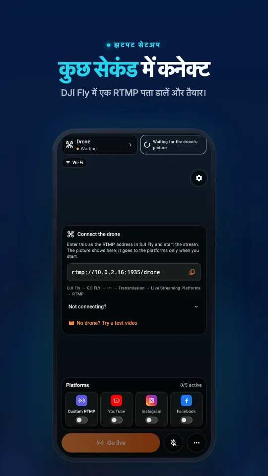
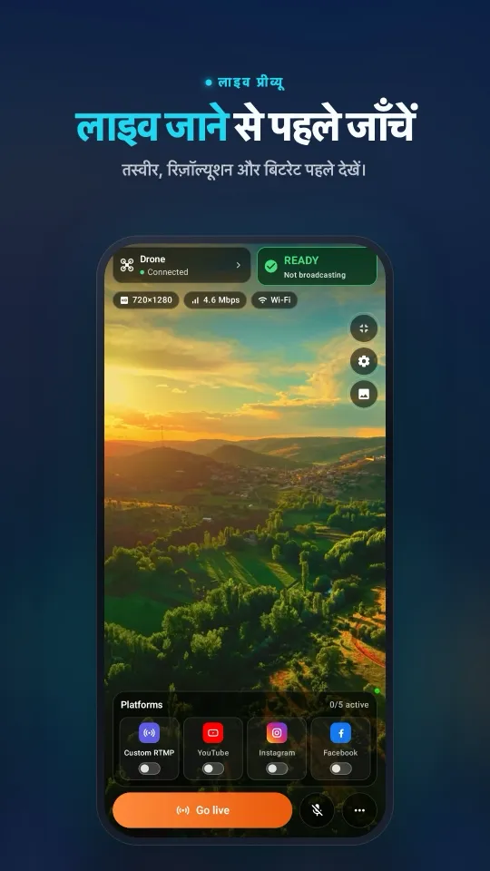
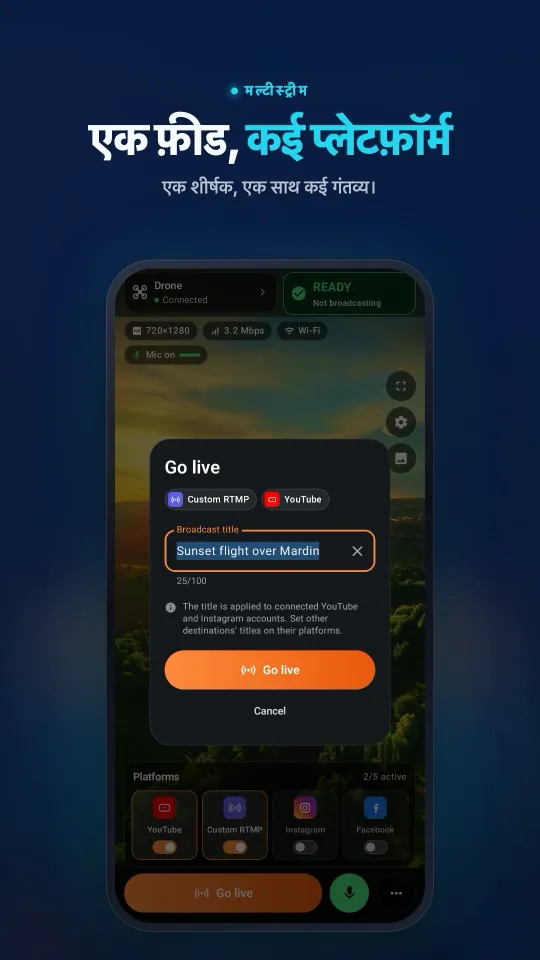
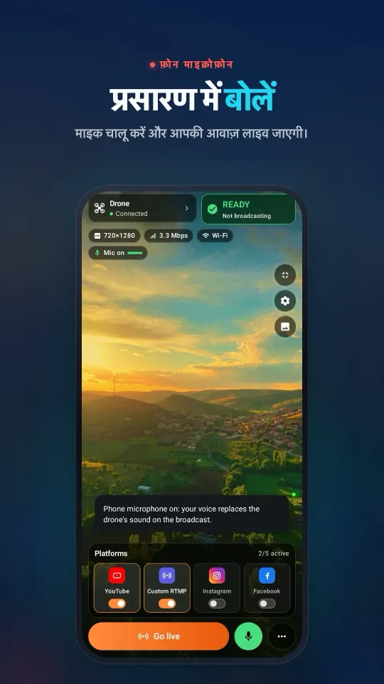
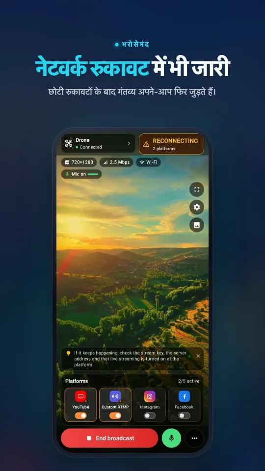

मेरी DJI ड्रोन लाइव स्ट्रीम सिर्फ़ 720p या धुंधली क्यों है?
कैमरा 4K या उससे ज़्यादा में रिकॉर्ड करता है, लेकिन लाइव स्ट्रीम को कैमरा नहीं, DJI Fly सीमित करता है। DJI के अनुसार DJI RC 2 और RC Pro 2 सिर्फ़ 720p में स्ट्रीम करते हैं, और बिटरेट तय है: Android पर 5 या 3 Mbps और iPhone पर 2 या 1 Mbps। ये सीमाएँ बढ़ाई नहीं जा सकतीं, लेकिन आप सबसे अच्छे विकल्प चुन सकते हैं, नेटवर्क को सुरक्षित रख सकते हैं और देख सकते हैं कि असल में क्या पहुँच रहा है।
क्या DJI Fly आपके RC 2 पर माइक्रोफ़ोन माँगता है और स्ट्रीम शुरू नहीं करता? बिना माइक ख़रीदे ठीक करें →
संक्षेप में
- लाइव स्ट्रीम ड्रोन की रिकॉर्डिंग से अलग, कहीं छोटा वीडियो है। उसका रिज़ॉल्यूशन और बिटरेट DJI Fly और रिमोट कंट्रोलर तय करते हैं।
- DJI RC 2 और DJI RC Pro 2 हार्डवेयर के कारण सिर्फ़ 720p में स्ट्रीम करते हैं; DJI RC Pro, DJI Fly 1.18.0 से सिर्फ़ 720p में स्ट्रीम करता है। Mavic 4 Pro इन्हीं कंट्रोलरों के साथ चलता है, इसलिए उसकी स्ट्रीम 720p है।
- DJI Fly, Android पर 5 या 3 Mbps और iOS पर 2 या 1 Mbps देता है। बिटरेट हाथ से सेट नहीं होता, इसलिए RC-N कंट्रोलर पर Android फ़ोन सबसे साफ़ तस्वीर देता है।
- तेज़ उड़ान में धुंधलापन और ब्लॉक कम बिटरेट से आते हैं, किसी ख़राबी से नहीं। 5 Mbps या कम पर धीमी, स्मूद मूवमेंट कहीं बेहतर दिखती है।
- कोई ऐप वह डिटेल नहीं जोड़ सकता जो DJI Fly ने भेजी ही नहीं। फ़ोन पर Stream My Drone वीडियो को बिना बदले आगे भेजता है, कोई अतिरिक्त नुकसान नहीं होता, और आने वाला बिटरेट दिखाता है।
कंट्रोलर के हिसाब से लाइव स्ट्रीम रिज़ॉल्यूशन और बिटरेट
DJI की लाइव स्ट्रीम गाइड दो सीमाएँ बताती है। रिज़ॉल्यूशन 1080p या 720p है, सिवाय उन कंट्रोलरों के जिन्हें वह सिर्फ़ 720p बताती है। बिटरेट उस डिवाइस पर निर्भर है जिस पर DJI Fly चलता है: Android पर 5 या 3 Mbps, iOS पर 2 या 1 Mbps। DJI कहता है कि उपलब्ध बिटरेट वीडियो ट्रांसमिशन फ़्रेम रेट से तय होते हैं और बदले नहीं जा सकते।
| कंट्रोलर | लाइव स्ट्रीम रिज़ॉल्यूशन | लाइव स्ट्रीम बिटरेट |
|---|---|---|
| RC-N1, RC-N2 या RC-N3 के साथ Android फ़ोन | 1080p या 720p | 5 या 3 Mbps |
| RC-N1, RC-N2 या RC-N3 के साथ iPhone | 1080p या 720p | 2 या 1 Mbps |
| DJI RC 2 | सिर्फ़ 720p (हार्डवेयर सीमा) | DJI Fly में दिखने वाले विकल्प |
| DJI RC Pro 2 | सिर्फ़ 720p (हार्डवेयर सीमा) | DJI Fly में दिखने वाले विकल्प |
| DJI RC Pro | DJI Fly 1.18.0 से सिर्फ़ 720p | DJI Fly में दिखने वाले विकल्प |
| DJI RC (पहला मॉडल) | लाइव स्ट्रीम नहीं | — |
लोकप्रिय ड्रोन के लिए इसका मतलब: Mavic 4 Pro RC 2 या RC Pro 2 के साथ उड़ता है, इसलिए उसकी स्ट्रीम 720p है। Mini 5 Pro, Mini 4 Pro और Air 3S RC 2 के साथ 720p में स्ट्रीम करते हैं, लेकिन RC-N कंट्रोलर और फ़ोन के साथ 1080p दे सकते हैं।
मॉडल के हिसाब से: Mavic 4 Pro, Mini 5 Pro, Mini 4 Pro, Air 3S, या लाइव स्ट्रीम कर सकने वाले DJI ड्रोन की पूरी सूची।
6 स्टेप में DJI Fly की सबसे साफ़ स्ट्रीम पाएँ
- DJI Fly में सबसे ऊँचे विकल्प चुनेंRTMP लाइव स्ट्रीम स्क्रीन में, अगर उपलब्ध हो तो Livestream Resolution को 1080p और Livestream Bitrate को ऊँचे मान पर रखें। DJI Fly अपडेट के बाद फिर देखें; विकल्प बदल सकते हैं।
- RC-N कंट्रोलर पर Android चुनेंRC-N1, RC-N2 या RC-N3 के साथ Android फ़ोन 5 Mbps तक और iPhone 2 Mbps तक देता है। दोनों हों तो Android से उड़ाएँ और दूसरे डिवाइस पर रिसीव करें।
- रिसीवर को मज़बूत नेटवर्क के पास रखें5 GHz Wi-Fi या फ़ोन हॉटस्पॉट इस्तेमाल करें, कंट्रोलर और रिसीवर को उसके पास रखें और गेस्ट Wi-Fi से बचें। खोया हुआ डेटा अटके या धब्बेदार फ़्रेम के रूप में दिखता है।
- देखें कि असल में क्या पहुँच रहा हैStream My Drone, DJI Fly से मिलने वाला बिटरेट दिखाता है और रुकावटें गिनता है; Mac और Windows पर रिज़ॉल्यूशन भी दिखाता है। अगर बिना रुकावट के लगभग 5,000 kbps दिखे, तो आपको उस सेटअप पर DJI Fly का सबसे अच्छा मिल रहा है।
- पक्का करें कि अपलोड काफ़ी हैरिसीवर हर प्लेटफ़ॉर्म पर स्ट्रीम दोबारा अपलोड करता है। हर डेस्टिनेशन के लिए कम से कम स्ट्रीम बिटरेट और सुरक्षित मार्जिन रखें; 5 Mbps के दो डेस्टिनेशन को 10 Mbps से काफ़ी ज़्यादा अपलोड चाहिए।
- बिटरेट के हिसाब से उड़ाएँ5 Mbps या कम पर तेज़ मोड़ और पेड़ों, पानी या भीड़ के ऊपर नीची उड़ान ब्लॉक में बदल जाती है। धीमी, स्थिर मूवमेंट और ज़्यादा ऊँचाई दर्शकों के लिए तस्वीर साफ़ रखती है।
आपके फ़ोन पर ऐसा दिखता हैDJI Fly कनेक्शन से लेकर कई प्लेटफ़ॉर्म पर प्रसारण तक, सब एक ही स्क्रीन पर।




लाइव स्ट्रीम की क्वालिटी कहाँ खोती है
तीन वीडियो अलग रखें: ड्रोन पर रिकॉर्ड हुई फ़ाइल, कंट्रोलर पर लाइव व्यू और DJI Fly की भेजी RTMP स्ट्रीम। दर्शकों तक सिर्फ़ आख़िरी पहुँचती है, और रास्ते में कई चरणों से गुज़रती है।
- DJI Fly एन्कोडिंग: सबसे बड़ा कदम। 4K रिकॉर्डिंग 1 से 5 Mbps की 720p या 1080p स्ट्रीम बन जाती है।
- कंट्रोलर से रिसीवर तक: कमज़ोर या भीड़ वाले Wi-Fi पर खोया डेटा कम रिज़ॉल्यूशन नहीं, बल्कि अटके फ़्रेम या ग्रे धब्बों के रूप में दिखता है।
- रिसीवर से प्लेटफ़ॉर्म तक: अगर अपलोड स्ट्रीम से धीमा है, तो प्लेटफ़ॉर्म बफ़र करता है या स्ट्रीम काट देता है।
- प्लेटफ़ॉर्म प्रोसेसिंग: YouTube, Instagram और दूसरे प्लेटफ़ॉर्म धीमे कनेक्शन वाले दर्शकों के लिए स्ट्रीम को कम क्वालिटी में दोबारा एन्कोड करते हैं।
- दर्शक का प्लेयर: प्लेयर अक्सर कम क्वालिटी से शुरू होते हैं और कनेक्शन के हिसाब से चुनते हैं। अपनी स्ट्रीम को परखने से पहले सबसे ऊँची क्वालिटी पर देखें।
क्या कोई ऐप स्ट्रीम को ज़्यादा साफ़ कर सकता है?
कोई ऐप वह डिटेल नहीं जोड़ सकता जो DJI Fly की स्ट्रीम में है ही नहीं। रिसीवर ऐप बस इतना कर सकता है कि उसे ख़राब न करे और आपको आँकड़े दिखाए।
- फ़ोन पर Stream My Drone DJI Fly का वीडियो बिना बदले और बिना दोबारा एन्कोड किए हर प्लेटफ़ॉर्म पर भेजता है, इसलिए कोई अतिरिक्त नुकसान नहीं होता।
- Mac या Windows पर Stream My Drone आपका चुना लेआउट, जैसे 9:16 वर्टिकल फ़्रेम, बनाने के लिए तस्वीर को दोबारा एन्कोड करता है। 720p इनपुट से 1080p आउटपुट बड़ा होता है, ज़्यादा डिटेल वाला नहीं।
- दोनों मिलने वाला बिटरेट दिखाते हैं और कंप्यूटर वर्ज़न रिज़ॉल्यूशन भी, ताकि पता चले कि धुंधली तस्वीर DJI Fly, Wi-Fi या प्लेटफ़ॉर्म से आ रही है।
क्या DJI ड्रोन से 4K लाइव स्ट्रीम हो सकती है?
DJI Fly की लाइव स्ट्रीम से नहीं: उसके विकल्प 1080p पर, और RC 2, RC Pro 2 और RC Pro पर 720p पर रुकते हैं। स्ट्रीम के दौरान ड्रोन पूरी क्वालिटी में रिकॉर्ड करता रहता है, इसलिए आम तरीका है उस पल को लाइव दिखाना और 4K रिकॉर्डिंग बाद में रीप्ले या हाइलाइट के रूप में पोस्ट करना।
ड्रोन लाइव स्ट्रीम कितना मोबाइल डेटा लेती है
| स्ट्रीम बिटरेट | प्रति घंटा डेटा, एक डेस्टिनेशन | दो डेस्टिनेशन |
|---|---|---|
| 1 Mbps | लगभग 0.45 GB | लगभग 0.9 GB |
| 2 Mbps | लगभग 0.9 GB | लगभग 1.8 GB |
| 3 Mbps | लगभग 1.35 GB | लगभग 2.7 GB |
| 5 Mbps | लगभग 2.25 GB | लगभग 4.5 GB |
ये नेटवर्क ओवरहेड और ऑडियो के बिना वीडियो के आँकड़े हैं। फ़ोन से एक साथ कई प्लेटफ़ॉर्म पर स्ट्रीम करने पर हर डेस्टिनेशन अलग अपलोड है, इसलिए डेटा और अपलोड स्पीड हर डेस्टिनेशन के साथ जुड़ते जाते हैं।
एक साथ कई प्लेटफ़ॉर्म: मल्टीस्ट्रीम गाइड।
स्रोत
रिज़ॉल्यूशन, सिर्फ़ 720p वाले कंट्रोलर, बिटरेट विकल्प और DJI RC: DJI Fly App Livestream Operation Guides। Mavic 4 Pro के कंट्रोलर: DJI लिंकिंग गाइड। 19 नवंबर 2026 को जाँचा गया।
संबंधित: DJI Fly लाइव स्ट्रीम एरर के समाधान, DJI Fly RTMP सेटअप और ड्रोन लाइव स्ट्रीमिंग की पूरी गाइड।
सवाल
मेरी DJI लाइव स्ट्रीम सिर्फ़ 720p क्यों है?
DJI के अनुसार DJI RC 2 और DJI RC Pro 2 हार्डवेयर के कारण लाइव स्ट्रीम में सिर्फ़ 720p सपोर्ट करते हैं, और DJI RC Pro, DJI Fly 1.18.0 से सिर्फ़ 720p में स्ट्रीम करता है। 1080p सिर्फ़ दूसरे सेटअप में मिलता है, जैसे फ़ोन के साथ RC-N कंट्रोलर।
क्या मैं DJI Fly में लाइव स्ट्रीम बिटरेट बदल सकता हूँ?
सिर्फ़ DJI Fly के दिए दो विकल्पों के बीच: Android पर 5 या 3 Mbps और iOS पर 2 या 1 Mbps। DJI के अनुसार ये वीडियो ट्रांसमिशन फ़्रेम रेट से तय होते हैं और किसी और तरह से बदले नहीं जा सकते।
क्या Mavic 4 Pro 1080p में लाइव स्ट्रीम करता है?
DJI, Mavic 4 Pro के कंट्रोलर के रूप में DJI RC 2 और DJI RC Pro 2 बताता है, और दोनों सिर्फ़ 720p में स्ट्रीम करते हैं। उसकी रिकॉर्डिंग ड्रोन पर पूरी क्वालिटी में रहती है।
तेज़ उड़ाने पर मेरी ड्रोन स्ट्रीम ब्लॉकी क्यों दिखती है?
5 Mbps या कम की लाइव स्ट्रीम में पेड़ों, पानी या भीड़ जैसे डिटेल वाले दृश्यों पर तेज़ मूवमेंट के लिए काफ़ी डेटा नहीं होता। धीमे और स्मूद उड़ाएँ, और देखें कि Wi-Fi डेटा तो नहीं खो रहा।
DJI Fly लाइव स्ट्रीम के लिए iPhone बेहतर है या Android?
RC-N कंट्रोलर के साथ Android: DJI Fly, Android पर 5 या 3 Mbps और iOS पर 2 या 1 Mbps देता है। रिसीव करने वाला फ़ोन कोई भी हो सकता है, क्योंकि वह वही आगे भेजता है जो DJI Fly भेजता है।
क्या DJI ड्रोन से 4K लाइव स्ट्रीम हो सकती है?
DJI Fly की लाइव स्ट्रीम से नहीं, जो अधिकतम 1080p देती है। लाइव स्ट्रीम करें और ड्रोन की 4K रिकॉर्डिंग बाद में पोस्ट करें।
अपने फ़ोन से ड्रोन को लाइव करें
Android और iPhone के लिए Stream My Drone, DJI Fly की तस्वीर लेकर उसे YouTube, Instagram, Facebook, TikTok, Twitch, Kick या आपके अपने सर्वर पर, एक साथ कई जगह भेजता है। एक बार की ख़रीद, कोई सब्सक्रिप्शन नहीं।

और गाइड
ड्रोन से लाइव स्ट्रीम कैसे करें? (स्टेप-बाय-स्टेप, 2026)
ड्रोन से YouTube, Instagram, TikTok या Facebook पर लाइव स्ट्रीम कैसे करें: क्या चाहिए, 4 तरीके, 5 स्टेप में DJI Fly RTMP सेटअप, कितनी इंटरनेट स्पीड चाहिए और समस्याओं के समाधान।
DJI Fly में “Livestream error”: कारण और हर कारण का समाधान
DJI Fly में “Livestream error” या “Starting livestream failed” दिख रहा है? 8 असली कारण (RTMPS, स्ट्रीम की, अकाउंट, माइक्रोफ़ोन, नेटवर्क) और हर एक का समाधान।
कौन-से DJI ड्रोन लाइव स्ट्रीम कर सकते हैं? मॉडल और कंट्रोलर की पूरी लिस्ट
DJI Fly में लाइव स्ट्रीम करने वाले सभी DJI ड्रोन, Mini 2 और Mini 4K से Mavic 4 Pro और Avata 360 तक, कौन-से कंट्रोलर चलते हैं, और 720p व माइक्रोफ़ोन की सीमाएँ।
ड्रोन से शादी की लाइव स्ट्रीम कैसे करें
जो मेहमान नहीं आ सकते, उनके लिए DJI ड्रोन से शादी लाइव दिखाएँ: प्लान, उपकरणों की लिस्ट, प्राइवेट YouTube लिंक, फ़ोन या लैपटॉप सेटअप और ज़रूरी सुरक्षा नियम।
DJI RC 2 बिना माइक्रोफ़ोन के लाइवस्ट्रीम नहीं करता? “No built-in mic in current device” कैसे ठीक करें
DJI Fly 1.16 बिना माइक्रोफ़ोन के RC 2 की लाइवस्ट्रीम शुरू नहीं करता। ऐसा क्यों होता है, क्या काम करता है (USB-C माइक, AirPods) और Android फ़ोन से बिना हार्डवेयर का हल।
DJI Flip से लाइव स्ट्रीम कैसे करें
RC 2, RC-N3 या RC-N2 के साथ DJI Flip से लाइव स्ट्रीम करें: फ़ोन और कंप्यूटर पर RTMP सेटअप, पाम और फ़ोन कंट्रोल का अंतर, वर्टिकल फ़्रेमिंग और प्लेटफ़ॉर्म जाँच।
DJI Lito X1 से लाइव स्ट्रीम कैसे करें
RC 2, RC-N3 या RC-N2 के साथ DJI Lito X1 से लाइव स्ट्रीम करें: DJI Fly RTMP सेटिंग, फ़ोन और कंप्यूटर के तरीके, प्लेटफ़ॉर्म सेटअप और काम की समस्या-समाधान टिप्स।
DJI Lito 1 से लाइव स्ट्रीम कैसे करें
RC 2, RC-N3 या RC-N2 के साथ DJI Lito 1 से लाइव स्ट्रीम करें: DJI Fly RTMP सेटिंग, फ़ोन और कंप्यूटर के तरीके, प्लेटफ़ॉर्म सेटअप और काम की समस्या-समाधान टिप्स।
DJI Air 3S से लाइव स्ट्रीम कैसे करें
DJI Air 3S से YouTube, Instagram या Facebook पर लाइव स्ट्रीम करें। controller चुनें, DJI Fly RTMP को फ़ोन या कंप्यूटर से जोड़ें और बाहर जाने वाली तस्वीर जाँचें।
DJI Air 3 से लाइव स्ट्रीम कैसे करें
DJI Air 3 से YouTube, Instagram या Facebook पर लाइव जाएँ: RC 2 या RC-N2 चुनें, DJI Fly RTMP को फ़ोन या कंप्यूटर से जोड़ें और प्रसारण से पहले बाहर जाने वाली तस्वीर जाँचें।
DJI Mavic 4 Pro से लाइव स्ट्रीम कैसे करें
RC 2 या RC Pro 2 के साथ DJI Mavic 4 Pro से फ़ोन या कंप्यूटर पर लाइव स्ट्रीम करें। DJI Fly RTMP, माइक्रोफ़ोन का अंतर, 720p सीमा और प्लेटफ़ॉर्म सेटअप जाँचें।
DJI Mavic 3, Classic या Pro से लाइव स्ट्रीम कैसे करें
RC-N1 या RC Pro के साथ DJI Mavic 3, Classic या Pro से लाइव स्ट्रीम करें। जानें DJI RC से स्ट्रीम क्यों नहीं होती, फ़ोन रिसीवर, डेस्कटॉप RTMP और क्वालिटी की सीमाएँ।
DJI Mini 3 Pro से लाइव स्ट्रीम कैसे करें
RC-N1, फ़ोन पर DJI Fly और कंप्यूटर पर Stream My Drone से DJI Mini 3 Pro की लाइव स्ट्रीम करें। जानें पुराना DJI RC यह RTMP तरीका क्यों इस्तेमाल नहीं कर सकता।
DJI Mini 3 से लाइव स्ट्रीम कैसे करें
RC-N1 और DJI Fly के ज़रिए कंप्यूटर पर Stream My Drone तक DJI Mini 3 की लाइव स्ट्रीम सेट करें। DJI RC की सीमा, 720p लाइव व्यू क्वालिटी और प्लेटफ़ॉर्म प्रकाशन जाँचें।
DJI Mini 5 Pro से लाइव स्ट्रीम कैसे करें
RC 2 या RC-N3 के साथ DJI Mini 5 Pro से लाइव स्ट्रीम करें। DJI Fly में RTMP सेट करें, फ़ोन या कंप्यूटर इस्तेमाल करें और ड्रोन का वीडियो YouTube, Instagram या Facebook पर भेजें।
DJI Mini 4 Pro से लाइव स्ट्रीम कैसे करें
RC 2 या RC-N2 के साथ DJI Mini 4 Pro से लाइव स्ट्रीम करें। फ़ोन और कंप्यूटर सेटअप, DJI Fly की RTMP सेटिंग्स, माइक्रोफ़ोन की ज़रूरत और प्लेटफ़ॉर्म की जाँच, सब एक गाइड में।
DJI ड्रोन से लाइव जानवरों को पहचानें और गिनें
Stream My Drone ड्रोन की लाइव तस्वीर में बकरी, भेड़, गाय, घोड़े, गधे और मुर्गियाँ पहचानता है, स्ट्रीम पर उन्हें चिह्नित करता है और गिनता है, सब कुछ आपके अपने कंप्यूटर पर।
DJI Fly RTMP लाइव स्ट्रीमिंग: पूरा सेटअप
DJI Fly में RTMP लाइव स्ट्रीमिंग कैसे सेट करें: सेटिंग कहाँ है, कौन सा पता डालना है, कंट्रोलर और कंप्यूटर को एक नेटवर्क पर कैसे जोड़ें और समस्या हो तो कैसे ठीक करें।
DJI Fly से Instagram पर लाइव स्ट्रीम क्यों नहीं होती (और इसका हल)
DJI Fly में Instagram का विकल्प नहीं है और उसका RTMP क्लाइंट Instagram के लिए ज़रूरी एन्क्रिप्टेड RTMPS नहीं भेज सकता। जानिए क्यों, और फिर भी DJI ड्रोन से Instagram पर लाइव कैसे जाएँ।
अपने DJI ड्रोन को कंप्यूटर का वेबकैम बनाएँ
Stream My Drone के वर्चुअल कैमरे से अपने DJI ड्रोन को TikTok LIVE Studio, OBS, Zoom, Google Meet या Teams के लिए वेबकैम बनाएँ। सेटअप, उपयोग के आइडिया और समस्याओं के हल।
DJI Neo से लाइव स्ट्रीम कैसे करें
DJI Neo से लाइव स्ट्रीम कैसे करें: कौन सा कंट्रोल मोड चलता है (फ़ोन, RC-N3, गॉगल्स), DJI Fly में RTMP, और Stream My Drone से Instagram, TikTok या YouTube पर लाइव जाना।
DJI Avata 2 से लाइव स्ट्रीम कैसे करें
DJI Avata 2 की FPV फ़ुटेज लाइव स्ट्रीम कैसे करें: Goggles 3 का व्यू फ़ोन पर DJI Fly से साझा करें, RTMP पर स्ट्रीम करें और Instagram, TikTok या YouTube पर लाइव जाएँ।
अपने DJI Osmo कैमरे से Instagram, TikTok और दूसरे प्लेटफ़ॉर्म पर लाइव स्ट्रीम करें
DJI Mimo, Osmo Action, Osmo Pocket और Osmo 360 कैमरों से RTMP पर स्ट्रीम कर सकता है। उसे Stream My Drone पर भेजें और एक साथ Instagram, TikTok और YouTube पर लाइव जाएँ।
Osmo Pocket 3 से Instagram और TikTok पर लाइव स्ट्रीम कैसे करें
DJI Osmo Pocket 3 से DJI Mimo के RTMP पर एक साथ Instagram, TikTok और YouTube पर लाइव स्ट्रीम कैसे करें, और Stream My Drone से इसे वायरलेस वेबकैम कैसे बनाएँ।
Osmo Action कैमरे से Instagram और TikTok पर लाइव स्ट्रीम कैसे करें
Stream My Drone से DJI Osmo Action 6, 5 Pro, 4 या 3 को DJI Mimo के RTMP पर एक साथ Instagram, TikTok, YouTube और Twitch पर लाइव स्ट्रीम करें। सेटअप और सही सेटिंग्स।
DJI ड्रोन से TikTok पर लाइव कैसे जाएँ
DJI Fly से अपने DJI ड्रोन को TikTok पर लाइव स्ट्रीम करें: TikTok स्ट्रीम की के साथ, या बिना की के TikTok LIVE Studio और वर्चुअल कैमरे से। सेटिंग्स और समस्याओं के हल।
DJI ड्रोन से Instagram पर लाइव कैसे जाएँ
DJI ड्रोन से Instagram पर लाइव जाएँ: instagram.com से स्ट्रीम URL और की लें, DJI Fly की RTMP स्ट्रीम Stream My Drone के ज़रिए भेजें, फिर Instagram पर Go live दबाएँ।
DJI ड्रोन से YouTube पर लाइव स्ट्रीम कैसे करें
DJI ड्रोन से YouTube पर लाइव स्ट्रीम करें: लाइव स्ट्रीमिंग चालू करें, YouTube Studio से स्ट्रीम की कॉपी करें, DJI Fly का RTMP Stream My Drone से भेजें। सेटिंग्स और सुझाव।
DJI ड्रोन से Facebook पर लाइव कैसे जाएँ
DJI ड्रोन से Facebook पर लाइव स्ट्रीम करें: Live Producer से RTMPS सर्वर URL और स्ट्रीम की लें, DJI Fly की स्ट्रीम Stream My Drone के ज़रिए भेजें, और लाइव जाएँ।
DJI ड्रोन से Twitch पर स्ट्रीम कैसे करें
DJI ड्रोन से Twitch पर लाइव स्ट्रीम करें: Creator Dashboard से अपनी स्ट्रीम की कॉपी करें, Stream My Drone में Twitch को कस्टम RTMP गंतव्य के रूप में जोड़ें और लाइव जाएँ।
DJI ड्रोन से Kick पर स्ट्रीम कैसे करें
DJI ड्रोन से Kick पर लाइव स्ट्रीम करें: Kick डैशबोर्ड से स्ट्रीम URL और की कॉपी करें, उन्हें Stream My Drone में कस्टम RTMP गंतव्य के रूप में जोड़ें, और लाइव जाएँ।
DJI ड्रोन से एक साथ कई प्लेटफ़ॉर्म पर स्ट्रीम करें
Stream My Drone से DJI ड्रोन की एक लाइव स्ट्रीम एक साथ TikTok, Instagram, YouTube, Facebook, Twitch और Kick पर भेजें — मुफ़्त, लोकल, बिना किसी रीस्ट्रीम सेवा के।
Stream My Drone बनाम Restream: आपके ड्रोन के लिए कौन सा?
DJI ड्रोन को कई प्लेटफ़ॉर्म पर स्ट्रीम करना है: Restream का क्लाउड रिले या आपके अपने कंप्यूटर पर Stream My Drone? लागत, वॉटरमार्क, Instagram, वर्टिकल वीडियो और कब कौन बेहतर।
बिना NGINX और OBS सेटअप के DJI ड्रोन से स्ट्रीम करें
DJI Fly को OBS में लाने का आम तरीका है NGINX RTMP सर्वर, एक कॉन्फ़िग फ़ाइल और मीडिया सोर्स। जानिए इस सेटअप में क्या-क्या लगता है, और एक ही ऐप से इसे कैसे छोड़ें।